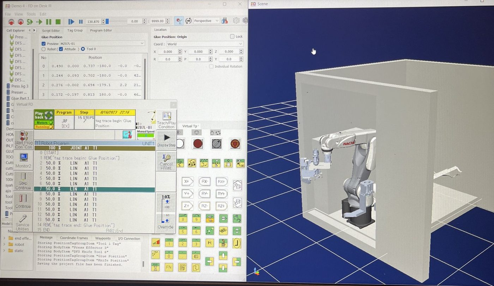
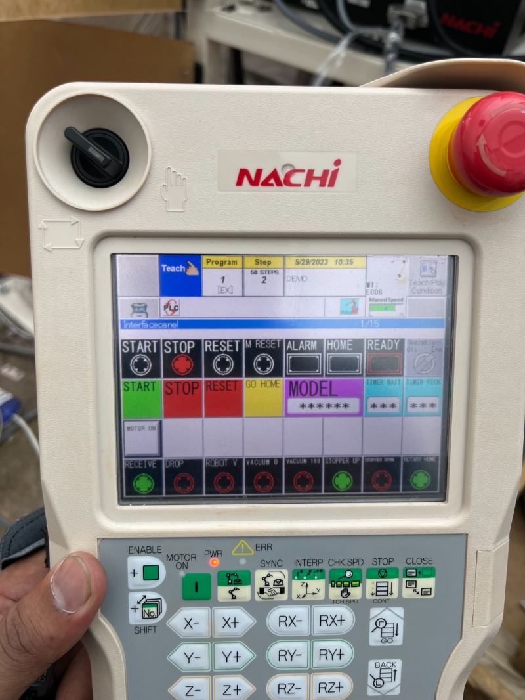
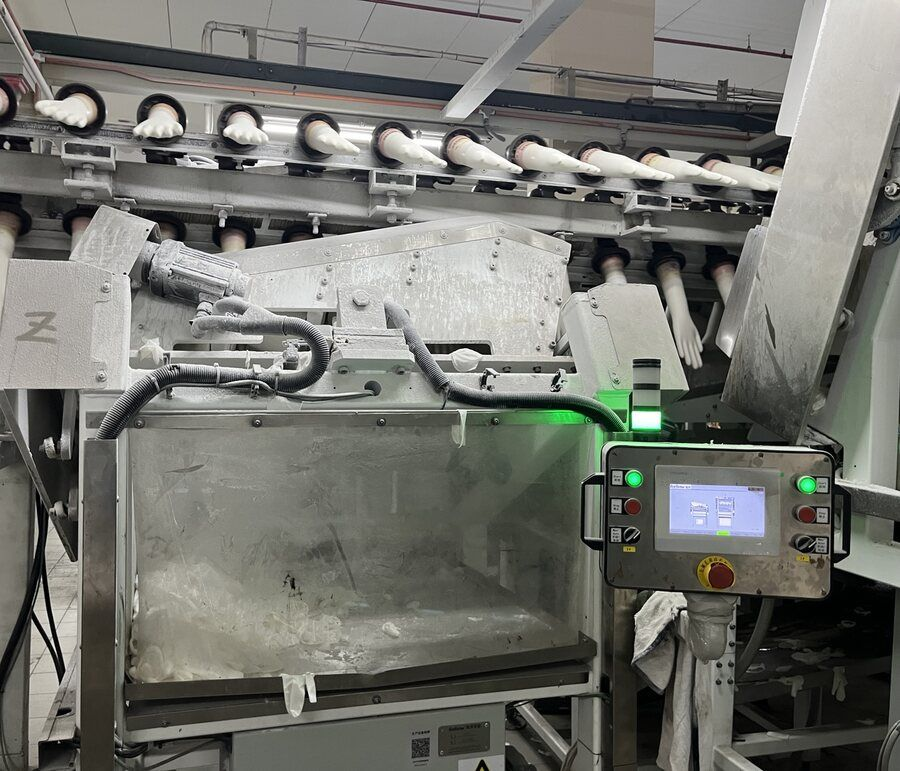
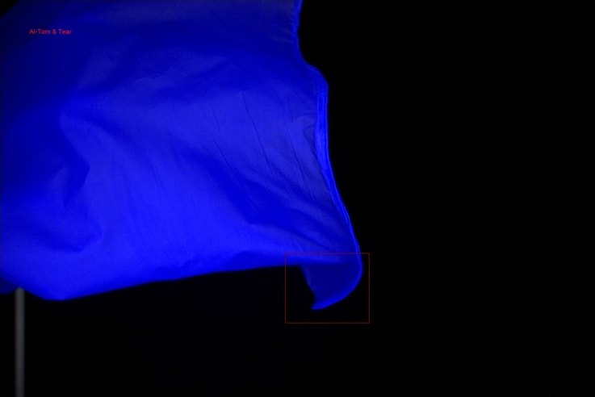
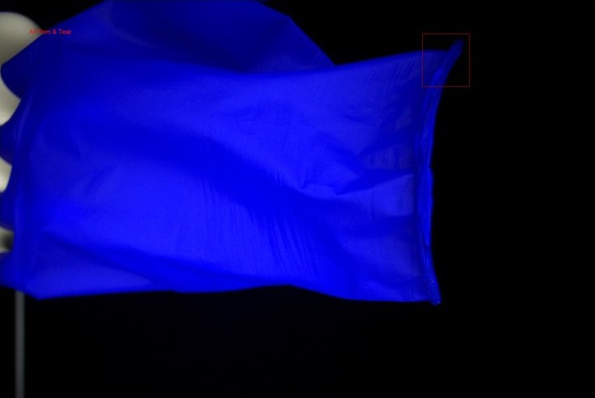

Real offline simulation · Nachi FD on Desk · Hot Glue, MZ07L robot, June 2023
1st place, HuroCup Marathon. Humanoid robot with OpenCV vision. Also Gold, FIRA Malaysia Cup and iCompEx.
R&D technician: feasibility studies, process and packaging improvement.
Nachi and Estun robots: offline simulation, teaching, robot–PLC, Keyence vision, commissioning.
Glove line automation, AI vision, PM, IQ/OQ/PQ, SOP/WI/OPL.
Vision for lithium battery: line-scan, winding and welding inspection.

Check reach, path, collision and cycle time before the robot is installed.
Teach pendant: positions, tool change, speeds.
Robot ↔ PLC handshake, Keyence vision, HMI.
Tune cycle time, then SOP / WI / OPL for operators.




Offline simulation, teaching, tool change, commissioning and cycle-time tuning (Nachi, Estun).
Robot–PLC handshake, Omron PLC, Keyence and AI vision, HMI for operators.
Troubleshooting, PM, IQ/OQ/PQ, SOP/WI/OPL and training new engineers.